Code Map and graph
The Code Map draws the stored call graph of a repository: which folders hold what, which symbols call which, and how one function reaches another. Everything on it is an edge the index recorded — calls, references, imports — never a guess. Reach for it when you need to see the shape around a symbol before you change it, or to find your way into a folder you have never opened.
Open It
Choose Code Map under EXPLORE, or open #/map. With no symbol chosen the map opens in the Clusters lens: the whole repository packed as its real folder tree.
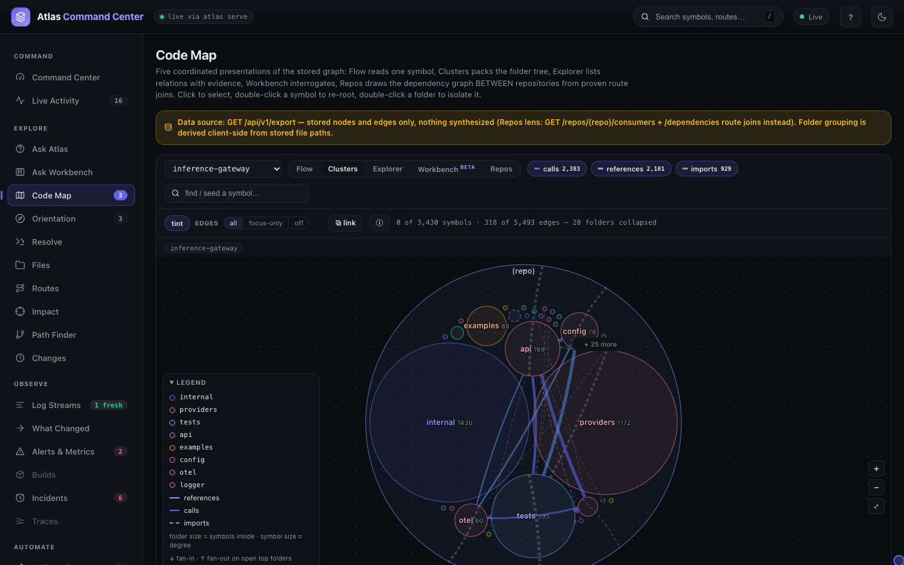
The controls along the top are shared by every lens:
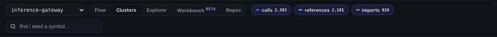
- The repository picker.
- The lens buttons: Flow, Clusters, Explorer, Workbench (beta) and Repos.
- The edge-kind chips with their counts — calls 2,383, references 2,181, imports 929 on inference-gateway. Click a chip to hide or show that kind. Imports start off in Flow and Explorer, which read call flow, and on in Clusters and Workbench, which read architecture.
- find / seed a symbol… — type a name to light up matches on the canvas (
Entercycles through them) or pick a row to re-root the map on it.
The line under the controls counts what is drawn against what exists — 0 of 3,430 symbols · 318 of 5,493 edges — 28 folders collapsed — so a hidden part of the graph is always named. ⧉ link copies a link that carries the lens, the focus, pins and edge kinds; ⓘ explains why the current lens looks the way it does.
Pick a Lens
The five lenses are five ways of reading the same stored graph. The focus symbol rides the URL, so switching lens keeps your place.
| Lens | What it shows | Reach for it when |
|---|---|---|
| Flow | One symbol at a time: callers enter from the left, callees leave on the right, one to three layers deep. | You are about to change a function and want to see who feeds it and what it calls. |
| Clusters | The whole repository as its folder tree, packed in circles, with the edges between folders aggregated and counted. Same input, same picture. | You are new to a repository, or want to see which folders lean on which. |
| Explorer | An answer-first list of one symbol's callers and dependencies, with call-site evidence in each row and a small synced map (25 nodes at most). | You want the exact list, with line numbers, rather than a picture. |
| Workbench (beta) | An interactive canvas of modules, collapsed to badges on a large repository, with style, filter and layout panels, box select and PNG export. | You want to arrange and export a picture of part of the graph. |
| Repos | The dependency graph between repositories, from HTTP calls one repository makes that match a route another serves. | Several services are indexed and you need to know which calls which. |
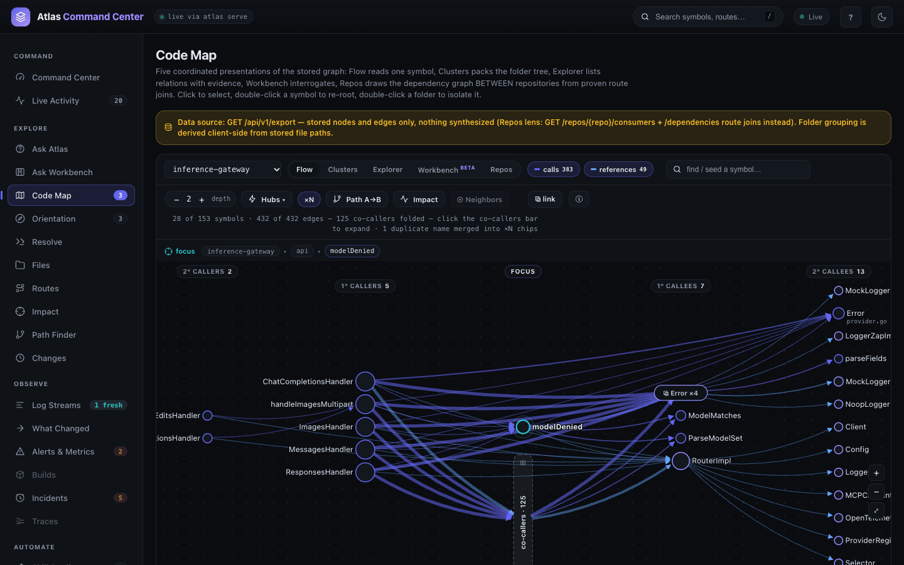
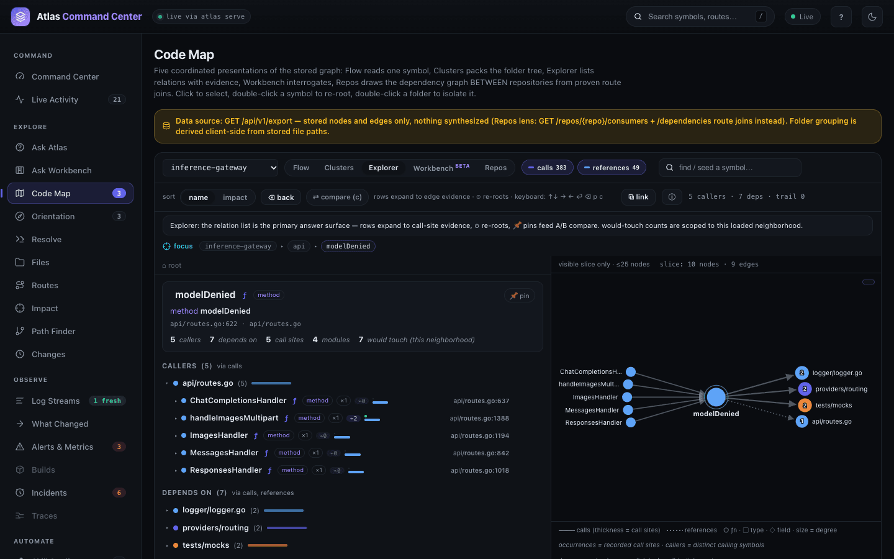
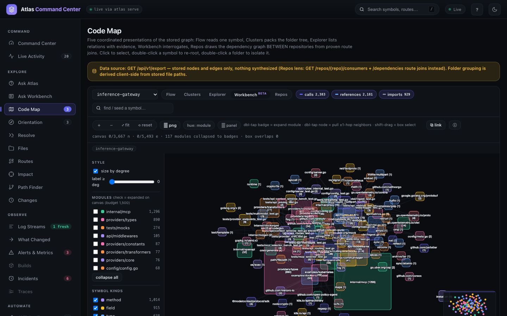
Workbench is a beta: the first time you choose it, the map explains that it loads an extra analysis engine once and asks you to confirm with Enable Workbench. Repos needs at least two repositories where one calls the other over HTTP; with nothing to join it says so:
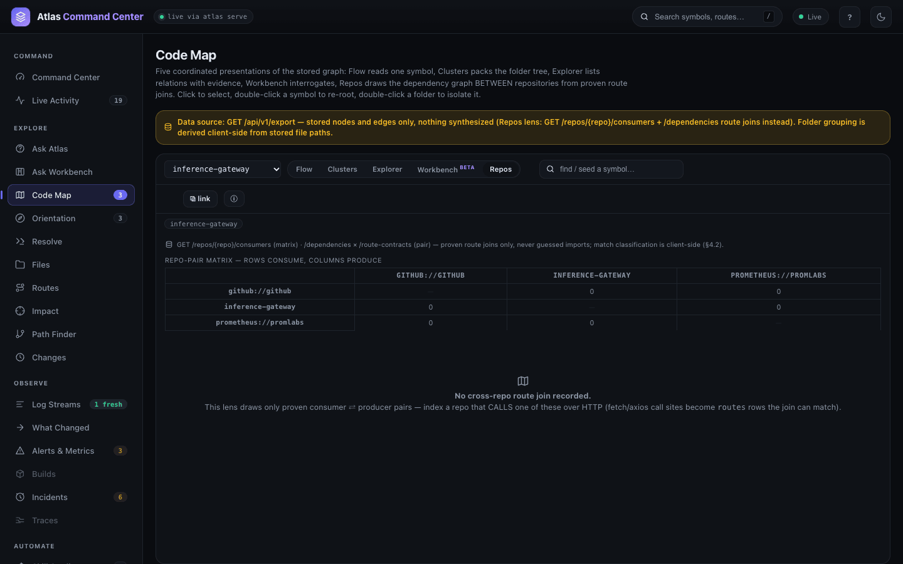
Read the Legend and Filter Edges
Each lens has a Legend in the lower left of the canvas; click its title to fold it away. In Clusters it names the colour of each top folder, the line style of each edge kind, and how to read size: a folder's size is the number of symbols inside it, a symbol's size is its degree. Open top folders carry ↓ fan-in and ↑ fan-out badges.
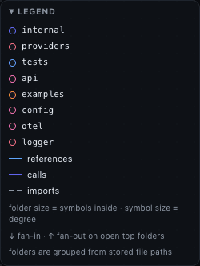
The Clusters toolbar controls how much is drawn:
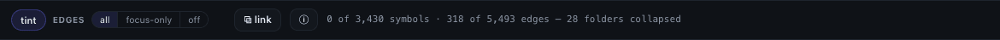
- EDGES all draws every edge between folders; past the edge budget they bundle into weighted ribbons.
- focus-only draws edges only for what you hover or select — the calm way to read a busy repository.
- off draws no edges: folders only.
- tint colours open folders in their hue.
To zoom, use the + and − buttons in the lower right of the canvas or the mouse wheel; drag to pan; ⤢ (or 0) fits the drawing to the frame. Click a node to select it.
Seed a Symbol and Read Its Neighbourhood
Flow and Explorer read one symbol at a time, so they start by asking for one.
- Click Flow. With no focus yet, the lens shows a search box and the repository's top hubs by degree.
- Type a name —
modelDenied— and click the row for the definition you mean (api/routes.go:622). - Read the layers: the five handlers that call
modelDeniedon the left, what it calls on the right (ModelMatches,ParseModelSet, the logger'sError), the second layer beyond each. Edge width grows with the number of call sites.
The Flow toolbar works on the focus:
- − 2 + steps the depth between 1 and 3; each step is a fresh query.
- Hubs ▾ lists the repository's hubs to re-seed from.
- ×N merges same-name definitions within a layer into one chip, such as Error ×4.
- Path A→B draws the path between two symbols on the canvas; Impact overlays the blast radius of the selected symbol; Neighbors fetches and grafts the selected symbol's neighbours that are not drawn yet.
- When a layer holds many symbols that call the same thing, they fold into a co-callers bar; click it to expand.
Anywhere on the map, double-click a symbol to re-root Flow on it. Explorer reads the same focus as a list: the focus card counts callers, dependencies, call sites and modules, and each row expands to the call-site lines.
Isolate a Folder
A large folder can be read on its own. In Clusters, double-click the folder: the map redraws with only that subtree, a breadcrumb (inference-gateway › providers) shows where you are, and the count strip says isolated to providers. ⤴ leave isolate returns to the whole repository.
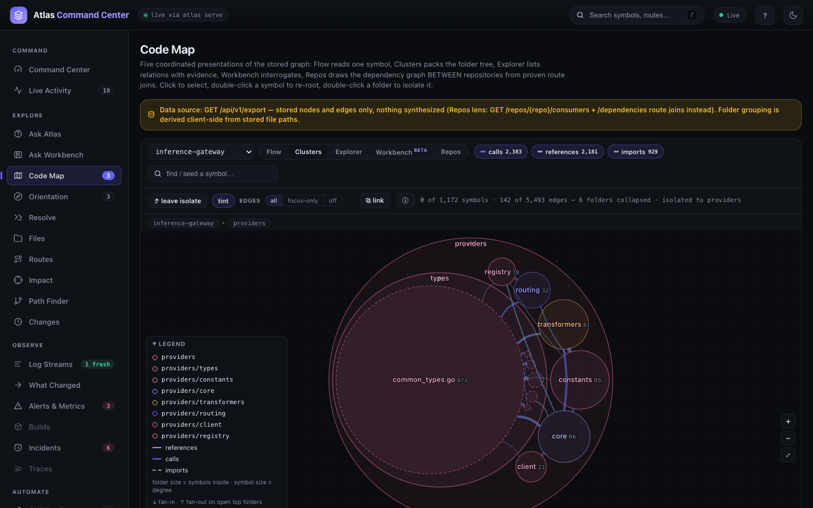
Find the Path Between Two Symbols
Path Finder (#/path) answers "how does A reach B?" with the shortest forward chain of stored call edges, or says that none exists.
- Pick the repository and a depth budget (6 by default).
- In From (the caller side) search and pick the start symbol; in To (the callee side) pick the target.
- Read the chain: one card per step with kind, signature and location, and the edge between steps. The map button on a card opens that symbol in the Code Map.
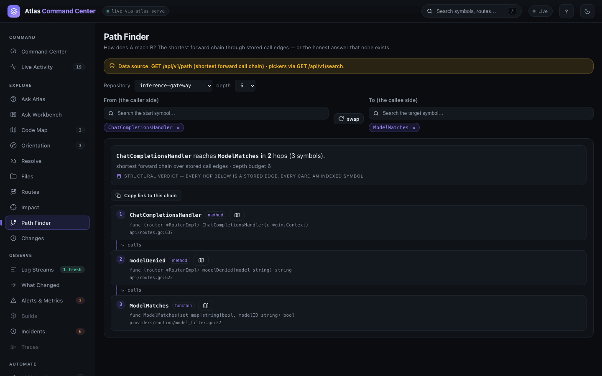
Call edges have a direction. If no path is found, swap asks the reverse question in one click. Copy link to this chain gives a link that reopens the same answer.
Resolve a Log Line to Code
Resolve (#/resolve) starts from the other end: paste a log line, a stack frame or an error string, one per line, and Atlas finds the statement that emits it, then walks its blast radius and the recent change window. At index time Atlas records the message each log statement can emit, so a line with different ids, timestamps and values still matches.
- Pick the repository.
- Paste the line — here a JSON log line from the gateway:
{"level":"error",…,"msg":"model not in allowed list","model":"gpt-4o",…}. - Click Resolve. The answer is a chain of three cards.
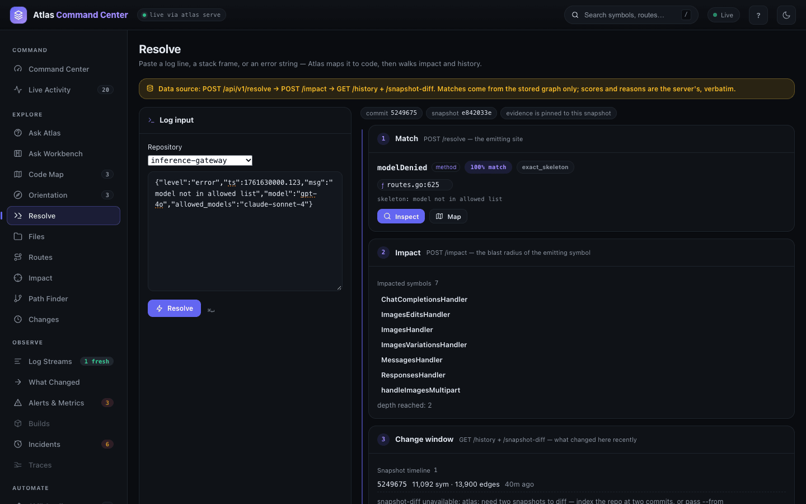
- Match — the emitting symbol and line, the match score and the reason the server gives (
exact_skeleton), with Inspect and Map. - Impact — the symbols a change to it would reach.
- Change window — the snapshot timeline and what changed between the last two snapshots. With a single snapshot indexed, it says a diff needs two.
The commit and snapshot the evidence came from are pinned at the top of the answer.
From the CLI
Each map question has a command. Output below is from inference-gateway, in --format plain.
atlas neighbors — a symbol's direct callers and callees (what Flow draws at depth 1):
atlas neighbors modelDenied --format plain
neighbors modelDenied callers 5 callees 6
callers(5) ChatCompletionsHandler, ImagesHandler, MessagesHandler, ResponsesHandler, handleImagesMultipart
callees(6) Error, Error, ModelMatches, ParseModelSet, Error, Erroratlas path — the shortest forward call path (Path Finder); --max-depth sets the budget:
atlas path ChatCompletionsHandler ModelMatches --format plain
path ChatCompletionsHandler -> ModelMatches len 2
steps ChatCompletionsHandler -> modelDenied -> ModelMatches
atlas path main ModelMatches --format plain
path main -> ModelMatches NOT FOUNDatlas hubs and atlas communities — the load-bearing symbols and the dense clusters (Orientation's lists):
atlas hubs --limit 5 --format plain
hubs total 5
main function in 0 out 71 total 71 cmd/gateway/main.go
ProviderImpl.ListModels method in 2 out 53 total 55 providers/core/provider.go
RouterImpl.handleImagesMultipart method in 2 out 53 total 55 api/routes.go
RouterImpl.MessagesHandler method in 0 out 52 total 52 api/routes.go
RouterImpl.ImagesHandler method in 0 out 51 total 51 api/routes.go
atlas communities --limit 3 --format plain
communities total 3161 shown 3
#0 size 137 ProviderImpl.ListModels, RouterImpl.handleImagesMultipart, RouterImpl.MessagesHandler
#1 size 69 main, LoggerZapImpl.Debug, MockLogger.Debug
#2 size 65 LoggerZapImpl.Error, MockLogger.Error, MockLoggerMockRecorder.Erroratlas report — summary, hubs and communities in one Markdown report:
atlas report --format plain
# Graph report
## Summary
- Files: 89
- Symbols (nodes): 3526
- Call edges: 1317
- Communities (size > 1): 40
- Isolated nodes: 3121
- Languages: go:3511 bash:9 typescript:6
- Edge kinds: calls:4706 references:3158 imports:540
…atlas export — a symbol's neighbourhood or the whole graph as json, mermaid, dot or a self-contained html page; --bundle DIR writes the interactive page and the report together:
atlas export --symbol modelDenied --depth 1 --format mermaid
flowchart LR
n0["RouterImpl (type)"]
n1["modelDenied (method)"]
n2["ChatCompletionsHandler (method)"]
…
n9["ParseModelSet (function)"]
n10["ModelMatches (function)"]
n2 --> n1
n1 --> n10
n1 --> n9
…Pasting a log line works from the terminal too: atlas logsites resolve "<line>" returns the same match (api/routes.go:625, modelDenied, exact_skeleton). Flags for each command are in the CLI reference; the map reads GET /api/v1/export, Path Finder GET /api/v1/path and Resolve POST /api/v1/resolve (see Dashboard and API).
Related
- The dashboard — the frame, the omnibox and the inspector.
- Search and Ask — find a symbol by name or ask in plain language.
- Impact and review — the full blast radius of a change.
- Change lens and history — what each indexing pass changed.
- Observe — log streams and incidents that Resolve links back to code.